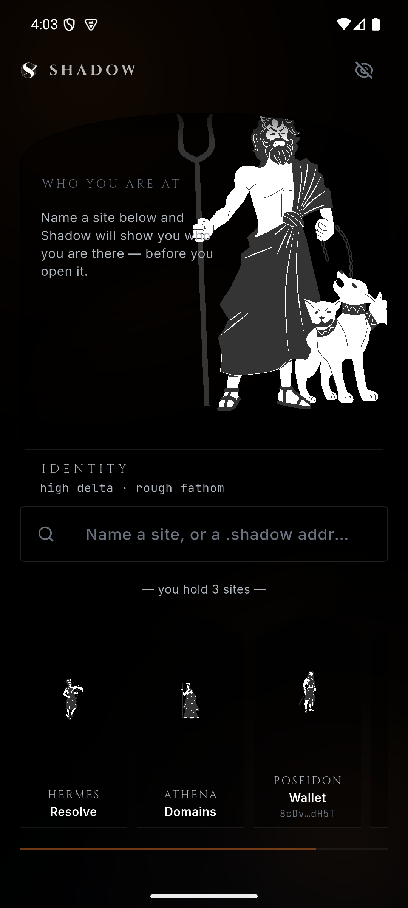

One phrase becomes your wallet, a different password for every site, and a different address for every sign-up. None of it is stored — Shadow works it out again each time you unlock.
Free. No account. Nothing to sign up for.
